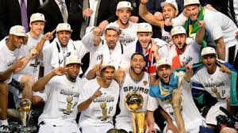
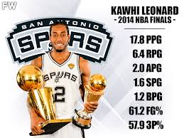
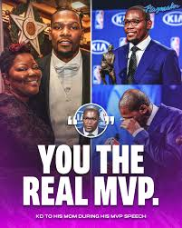
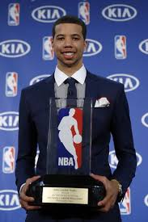
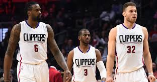

Spursi su imali najbolji omjer u ligi (62-20) i pokazali vrhunac timske košarke. U finalu su uništili Miami Heat (4-1) i osvojili svoj peti naslov u povijesti. Njihova nesebična igra ostala je primjer savršene timske košarke.

Kawhi Leonard je čovjek sa tragičnom prošlosti koji je poznat po tome da je uvijek tih i bez emocija zbog čega su ga ljudi počeli zvati robotom. Ove sezone se dokazao kao jedan od najboljih obrambenih igrača na svijetu, čak je i dao noćne more Marku Kruku koji nije bio nimalo sretan kada ga je vidio da ulazi u igru tokom finala.Zasluženi MVP finala.

Kevin Durant je odigrao najbolju sezonu u karijeri i osvojio svoj prvi MVP naslov. Predvodio je ligu u poenima i izgovorio slavne riječi u govoru: "You the real MVP", posvećene svojoj majci.

Michael Carter-Williams odmah je impresionirao u svojoj prvoj utakmici protiv prošlogodišnjih prvaka
sa 22 poena 12 asistencija 7 skokova i nevjerojatnih

Chris Paul jedan od najboljih i podcijenjenih igrača, moda i najbolji dodavač svih vremena udružio se sa 2 nevjerojatna skakača i tako je nastao jedan od najuzbudljivijih timoa u povijesti košarke poznat po jaki zakucavanjima Deandre Jordana i Blake Griffina.